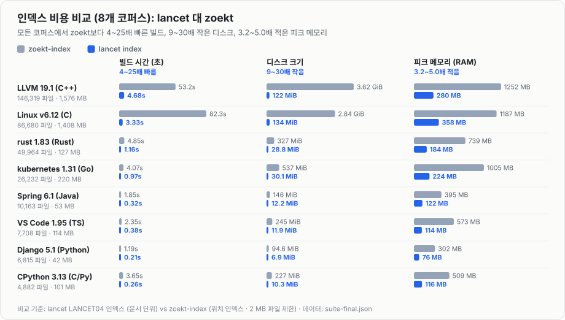
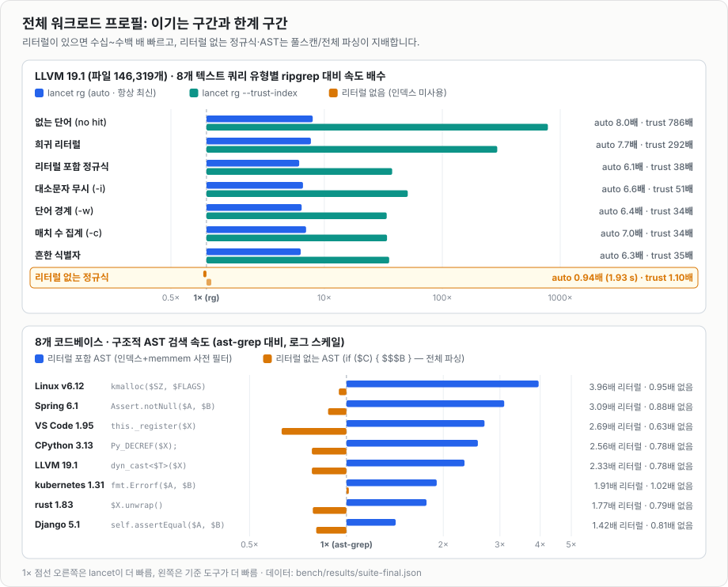

핵심 개념
아키텍처, 실패 사례 방지 & 정직한 벤치마크
8개 저장소 실측 데이터와 ripgrep, zoekt, ast-grep, tgrep, grix, aft 대비 장단점을 가감 없이 공개합니다.
도구들이 서로 다른 전제로 설계되어 있으면 에이전트가 rg → sed → patch → pdftotext를 잇는 틈에서 조용한 데이터 손실이 터집니다. Lancet은 한 바이너리 안에서 좌표와 잠금을 통합하는 동시에, 경쟁 도구 대비 느린 부분까지 투명하게 공개합니다.
직접 재현해 막아낸 7가지 실패 사례#

bench/failure_modes.py가 실제 도구로 직접 재현한 결과입니다.- 연속 편집 시 줄 밀림:
rg -n한 번으로sed -i를 두 번 치면 두 번째가 잘못된 줄을 고치고도 종료 0을 냅니다.lancet edit --edits는 모든 hunk를 원본 줄 번호로 해석합니다. - 동시 수정 유실: 4개 에이전트가 읽기→쓰기를 반복하면 일반 파일에서는 800개 중 600개가 유실되고,
lancet edit --rev는 800개 중 0개가 유실됩니다. - 반쪽 적용 패치:
patch -p1은 한 파일만 고치고 실패해도 되돌리지 않습니다.lancet patch는 사전 검증과 쓰기 경합 시 롤백으로 원자성을 지킵니다. - 주석·문자열 오염:
sed일괄 치환은 주석·문자열까지 0.3~11.7% 바꿉니다.refs와ast는 이를 제외하며,rename은 로컬 스코프를 재검증합니다. - 문서 좌표 불일치:
.docx에서rga→pandoc조합은 40줄 중 0줄만 일치했고, Lancet은 단일 추출 파이프라인으로 40/40 일치했습니다. - 수정 직후 인덱스 지연: 파일 20개를 고친 직후 zoekt는 새 텍스트를 0건 찾고 지운 텍스트를 20건 찾았지만, Lancet
auto는 20건·0건을 정확히 반환했습니다. - 링크·권한 손상:
sed -i/perl -pi는 심볼릭/하드 링크를 끊고0640권한을 날리지만, Lancet은 대상 파일과 권한·소유자를 보존합니다.
전체 배경 에세이: docs/why-one-tool.ko.md (English).
핵심 벤치마크 스위트 (코드베이스 8개)#
Apple M4 Pro, 웜 캐시, hyperfine -N 5회 중앙값. 전체 표: bench/results/SUITE.md.


| 코퍼스 | 파일 | lancet 인덱스 (빌드 · 디스크 · 피크) | zoekt 인덱스 (빌드 · 디스크 · 피크) | auto 대 rg | trust 대 rg | AST 대 ast-grep |
|---|---|---|---|---|---|---|
| Linux v6.12 (C) | 86,680 | 3.3 s · 134 MB · 358 MB | 82 s · 2.9 GB · 1.2 GB | 5.8~7.5배 | 13~403배 | 4.0배 |
| LLVM 19.1 (C++) | 146,319 | 4.7 s · 122 MB · 280 MB | 53 s · 3.7 GB · 1.3 GB | 6.1~8.0배 | 34~786배 | 2.3배 |
| rust 1.83 (Rust) | 49,964 | 1.2 s · 29 MB · 184 MB | 4.9 s · 327 MB · 739 MB | 1.5~9.6배 | 2~273배 | 1.8배 |
| kubernetes 1.31 (Go) | 26,232 | 1.0 s · 30 MB · 224 MB | 4.1 s · 537 MB · 1.0 GB | 3.5~5.8배 | 9~210배 | 1.9배 |
| VS Code 1.95 (TS) | 7,708 | 0.4 s · 12 MB · 114 MB | 2.4 s · 245 MB · 573 MB | 2.1~3.9배 | 4~63배 | 2.7배 |
| Django 5.1 (Python) | 6,815 | 0.2 s · 7 MB · 76 MB | 1.2 s · 95 MB · 302 MB | 2.4~2.9배 | 10~60배 | 1.4배 |
| CPython 3.13 (C/Py) | 4,882 | 0.3 s · 10 MB · 116 MB | 3.7 s · 227 MB · 509 MB | 3.0~5.4배 | 5~30배 | 2.6배 |
| Spring 6.1 (Java) | 10,163 | 0.3 s · 12 MB · 122 MB | 1.9 s · 146 MB · 395 MB | 2.9~5.3배 | 6~95배 | 3.1배 |
인덱스·에이전트 도구 경쟁 비교 (정직한 트레이드오프)#
bench/competitors_agents.py로 rg, ast-grep, tgrep(디스크·상주 데몬 serve), grix, aft, tensor-grep, probe를 동일 조건에서 측정했습니다 (COMPETITORS.md):
- Lancet이 우위인 지점: 데몬 없이 수정 직후 0 ms 최신성 20/20(
aft워처 지연과 서버리스tgrep는 0/20);aft/tgrep대비 디스크 인덱스 1/3~1/7 크기(Linux 기준 141.8 MB vs 368.5 MB / 955.2 MB);grix대비 빌드 피크 RAM 약 1/3(Linux 353.5 MB vs 1,001.6 MB);rg줄 수 20/20 완전 일치; 테스트한 4개 코퍼스 모두에서 가장 빠른 리터럴 AST 검색. - 상주 데몬이나 특화 도구가 더 빠른 지점: 상주 데몬인
tgrep serve는 Rust(119.2 ms vs 508.7 ms)와 LLVM(19.9 ms vs 295.8 ms)의regex with literal, 그리고 Django(15.4 ms)/Rust(60.9 ms)의 리터럴 없는 정규식에서 데몬 없는lancet auto보다 빠릅니다.grix --no-auto-index는 Linux 희귀 리터럴에서lancet --trust-index보다 빠릅니다(11.5 ms vs 43.6 ms). 상주aft(587~1,260 MB RAM 점유)는 Rust 희귀 리터럴에서 8.5 ms vs 73.5 ms로 더 빠릅니다. 리터럴 없는 정규식과 AST 패턴은 각각rg(최대 1.4배 느림),ast-grep(0.6~1.0배) 수준입니다.